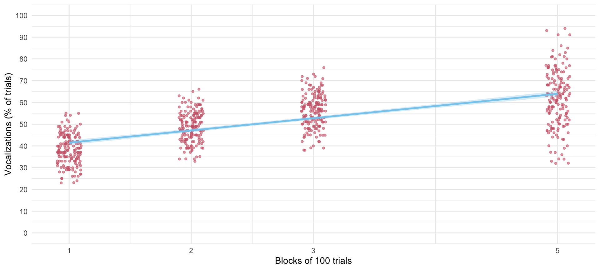
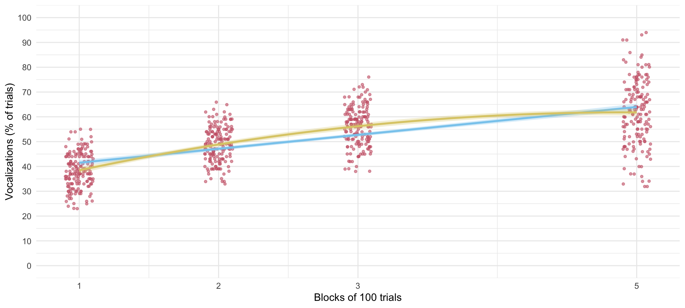
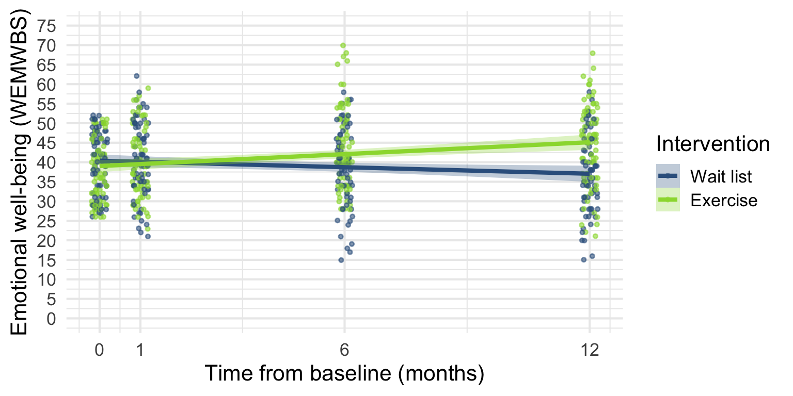

Growth models
More multilevel adventures
University of Sussex


|


Load and Look
| block | Mean | SD | IQR | Range | Skewness | Kurtosis | n | n_Missing |
|---|---|---|---|---|---|---|---|---|
| 1 | 38.47 | 7.05 | 11 | (23.00, 55.00) | 0.03 | -0.50 | 167 | 0 |
| 2 | 48.80 | 6.99 | 10 | (33.00, 66.00) | -0.02 | -0.49 | 167 | 0 |
| 3 | 56.25 | 7.80 | 11 | (38.00, 76.00) | -0.08 | -0.32 | 167 | 0 |
| 5 | 61.79 | 12.95 | 18 | (32.00, 94.00) | -0.06 | -0.18 | 167 | 0 |

Visualize
ggplot(train_tib, aes(x = block, y = vocalizations)) +
geom_point(size = 1, alpha = 0.6, position = position_jitter(width = 0.1, height = 0.1), colour = "#CC6677") +
geom_smooth(method = "lm", formula = y ~ x, alpha = 0.3, colour = "#88CCEE", fill = "#88CCEE") +
coord_cartesian(ylim = c(0, 100)) +
scale_y_continuous(breaks = seq(0, 100, 10)) +
scale_x_continuous(breaks = c(1, 2, 3, 5)) +
labs(x = "Blocks of 100 trials", y = "Vocalizations (% of trials)") +
theme_minimal() 

Evaluate fit

Evaluate fit
| AIC | AICc | BIC | R2 (cond.) | R2 (marg.) | ICC | RMSE | Sigma |
|---|---|---|---|---|---|---|---|
| 4383.4 | 4383.5 | 4410.4 | 0.90 | 0.44 | 0.81 | 3.23 | 4.06 |
Visualize
ggplot(train_tib, aes(x = block, y = vocalizations)) +
geom_point(size = 1, alpha = 0.6, position = position_jitter(width = 0.1, height = 0.1), colour = "#CC6677") +
geom_smooth(method = "lm", formula = y ~ x, alpha = 0.3, colour = "#88CCEE", fill = "#88CCEE") +
coord_cartesian(ylim = c(0, 100)) +
scale_y_continuous(breaks = seq(0, 100, 10)) +
scale_x_continuous(breaks = c(1, 2, 3, 5)) +
labs(x = "Blocks of 100 trials", y = "Vocalizations (% of trials)") +
theme_minimal()
Visualize
ggplot(train_tib, aes(x = block, y = vocalizations)) +
geom_point(size = 1, alpha = 0.6, position = position_jitter(width = 0.1, height = 0.1), colour = "#CC6677") +
geom_smooth(method = "lm", formula = y ~ x, alpha = 0.3, colour = "#88CCEE", fill = "#88CCEE") +
geom_smooth(method = "lm", formula = y ~ poly(x, 2), alpha = 0.3, colour = "#DDCC77", fill = "#DDCC77") +
coord_cartesian(ylim = c(0, 100)) +
scale_y_continuous(breaks = seq(0, 100, 10)) +
scale_x_continuous(breaks = c(1, 2, 3, 5)) +
labs(x = "Blocks of 100 trials", y = "Vocalizations (% of trials)") +
theme_minimal() 
Evaluate fit
Evaluate fit
| AIC | AICc | BIC | R2 (cond.) | R2 (marg.) | ICC | RMSE | Sigma |
|---|---|---|---|---|---|---|---|
| 3670.6 | 3670.8 | 3702.2 | 0.99 | 0.48 | 0.98 | 1.00 | 1.39 |
Interpret random effects
| Parameter | Coefficient | 95% CI |
|---|---|---|
| SD (Intercept: id) | 6.99 | |
| SD (block: id) | 2.47 | |
| Cor (Intercept~block: id) | -0.31 | |
| SD (Residual) | 1.39 |

Interpret fixed effects
| Parameter | Coefficient | SE | 95% CI | z | p |
|---|---|---|---|---|---|
| (Intercept) | 25.01 | 0.59 | (23.85, 26.17) | 42.12 | < .001 |
| block | 14.96 | 0.27 | (14.43, 15.49) | 55.46 | < .001 |
| block^2 | -1.52 | 0.03 | (-1.58, -1.46) | -50.05 | < .001 |
Evaluate fit
Evaluate fit
| AIC | AICc | BIC | R2 (cond.) | R2 (marg.) | ICC | RMSE | Sigma |
|---|---|---|---|---|---|---|---|
| 3165.6 | 3165.9 | 3210.6 | 1.00 | 0.53 | 0.99 | 0.42 | 0.62 |
Interpret random effects
Interpret fixed effects
| Parameter | Coefficient | SE | 95% CI | z | p |
|---|---|---|---|---|---|
| (Intercept) | 51.33 | 0.63 | (50.09, 52.56) | 81.36 | < .001 |
| block (1st degree) | 214.78 | 7.45 | (200.19, 229.38) | 28.85 | < .001 |
| block (2nd degree) | -69.70 | 1.87 | (-73.37, -66.04) | -37.28 | < .001 |
Load and Look
| time | intervention | Mean | SD | IQR | Range | Skewness | Kurtosis | n |
|---|---|---|---|---|---|---|---|---|
| Baseline | Wait list | 39.97 | 7.91 | 15.00 | (26.00, 52.00) | -0.25 | -1.27 | 67 |
| 1 month | Wait list | 40.60 | 9.67 | 15.00 | (21.00, 62.00) | -0.06 | -0.66 | 67 |
| 6 months | Wait list | 38.69 | 10.19 | 14.00 | (15.00, 58.00) | -0.31 | -0.38 | 67 |
| 12 months | Wait list | 37.03 | 9.95 | 15.00 | (15.00, 58.00) | -0.04 | -0.55 | 67 |
| Baseline | Exercise | 37.86 | 7.60 | 11.50 | (26.00, 51.00) | 0.20 | -1.09 | 74 |
| 1 month | Exercise | 39.88 | 8.76 | 12.25 | (23.00, 59.00) | 0.31 | -0.78 | 74 |
| 6 months | Exercise | 43.74 | 10.30 | 15.00 | (28.00, 70.00) | 0.66 | -0.08 | 74 |
| 12 months | Exercise | 44.26 | 10.80 | 17.00 | (21.00, 68.00) | -0.17 | -0.60 | 74 |
Visualize
ggplot(exercise_tib, aes(time_num, wemwbs, colour = intervention, fill = intervention)) +
geom_point(size = 1, alpha = 0.6, position = position_jitter(width = 0.2, height = 0.1)) +
geom_smooth(method = "lm", alpha = 0.3) +
coord_cartesian(ylim = c(0, 75)) +
scale_y_continuous(breaks = seq(0, 75, 5)) +
scale_x_continuous(breaks = c(0, 1, 6, 12), labels = c("0", "1", "6", "12")) +
scale_colour_viridis_d(begin = 0.3, end = 0.85) +
scale_fill_viridis_d(begin = 0.3, end = 0.85) +
labs(x = "Time from baseline (months)", y = "Emotional well-being (WEMWBS)", colour = "Intervention", fill = "Intervention") +
theme_minimal(base_size = 16) 
Evaluate fit
| Name | Model | df | df_diff | Chi2 | p |
|---|---|---|---|---|---|
| incpt_mlm | glmmTMB | 3 | |||
| time_mlm | glmmTMB | 4 | 1 | 6.63 | 0.010 |
| timers_mlm | glmmTMB | 6 | 2 | 34.76 | < .001 |
| ex_mlm | glmmTMB | 7 | 1 | 0.16 | 0.693 |
| int_mlm | glmmTMB | 8 | 1 | 43.14 | < .001 |
Evaluate fit
| AIC | AICc | BIC | R2 (cond.) | R2 (marg.) | ICC | RMSE | Sigma |
|---|---|---|---|---|---|---|---|
| 3828.0 | 3828.2 | 3862.6 | 0.73 | 0.06 | 0.71 | 4.19 | 5.03 |
Interpret random effects
Interpret fixed effects
| Parameter | Coefficient | SE | 95% CI | z | p |
|---|---|---|---|---|---|
| (Intercept) | 40.39 | 1.00 | (38.43, 42.36) | 40.35 | < .001 |
| time num | -0.28 | 0.08 | (-0.44, -0.12) | -3.47 | < .001 |
| intervention (Exercise) | -1.37 | 1.38 | (-4.08, 1.34) | -0.99 | 0.320 |
| time num × intervention (Exercise) | 0.79 | 0.11 | (0.57, 1.00) | 7.10 | < .001 |
Interpret simple slopes
| intervention | Slope | SE | 95% CI | z | p |
|---|---|---|---|---|---|
| Wait list | -0.28 | 0.08 | (-0.44, -0.12) | -3.47 | < .001 |
| Exercise | 0.51 | 0.08 | ( 0.36, 0.66) | 6.66 | < .001 |
\[ \begin{aligned} \gamma_\text{interaction} &= \gamma_\text{time (exercise)} - \gamma_\text{time (wait list)} \\ &= 0.51 - (-0.28) \\ &= 0.79 \end{aligned} \]